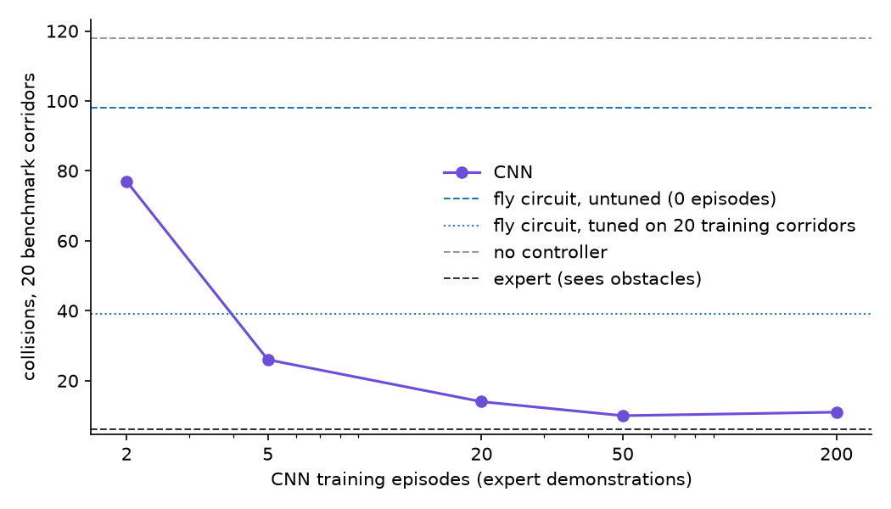

A hardwired model of the fruit fly's looming-escape circuit against a small trained CNN, both steering a simulated drone from the same 64x48 camera. With no training the fly cuts collisions by about a quarter, a CNN trained on two demonstration flights already beats it, and the circuit's weak point turns out to be reacting too late.
A fruit fly's fastest escapes run through a pair of large neurons called the
Giant Fibers. Almost all of the visual input reaching them comes from two
cell types, LPLC2 and LC4: between them, 99.4% of the Giant Fiber's direct
synapses from the optic lobe.
That's a very small circuit doing something that looks a lot like obstacle
avoidance. I wanted to know how far it gets if you wire it to a drone and
race it against a neural network that learned the same job from examples.
Correction, 17 September 2026. The first version of this post used a
mis-transcribed equation from the paper. The LPLC2 term was divided by
2·C4 instead of 2·C4², which made the fly respond far too strongly to
objects smaller than its preferred size. That version also left out the
paper's two inhibitory terms. Both are fixed now, every fly number below
comes from the corrected model, and the story changed: the fly does worse
without training, and its weak point is reacting late rather than
panicking. The CNN numbers are unchanged.
The circuit, straight from the paper
Ache et al. (2019, Current Biology) fit a model to recordings from the
Giant Fiber while a fly watched a disc expand on a screen. Two terms excite
it. LPLC2 responds to how big the object looks, with a log-normal tuning
curve that peaks at 42 degrees. LC4 responds to how fast it's growing,
roughly linearly. Two more terms inhibit it, both as functions of size: a
tonic one that grows for large objects, centred on 66 degrees, and a small
dip around 26 degrees. The Giant Fiber's drive is their weighted sum:
Those constants are published, and I never tuned them. With a full-size
disc held on screen, the inhibition wins and the drive goes negative, which
matches the hyperpolarization the paper reports. The paper also gives each
input its own delay, between 11 and 38 milliseconds; I left those out.
Everything on top of the sum is mine: the threshold where drive becomes an
escape, the dodge that follows, and the steering. The paper's model was fit
on trials where the fiber didn't fire, so it says nothing about when an
escape should happen. I put the threshold at half the peak of the model's
own size tuning, which a still object reaches at about 26 degrees.
The camera image gets averaged down to a 16 by 12 grid of
ommatidiaThe individual facets of an insect's compound eye. Here, one cell of a coarse grid over the camera image.,
and the circuit measures motion on that grid. A drone flying forward sees
everything expand, obstacles or not, so a radial motion opponency step
(RMO) subtracts the expansion that forward flight alone would produce.
The largest connected patch of whatever survives is treated as the object.
LPLC2 and LC4 detect looming, and nothing in them checks whether the looming thing is on a collision course.
Why the fly loses
Two drones, one camera
Both drones fly the same procedurally generated corridor, 120 m long and
8 m wide, full of poles and boxes, at 4 m/s. Each sees only a 64 by 48
grayscale frame from a camera on its nose. Neither gets obstacle positions.
The "drone" is deliberately simple. It flies forward at a constant speed and
a fixed height, and the only thing a controller can change is how hard it
steers sideways. There are no rotors, no tilting and no aerodynamics, so
this tests seeing and deciding, not flying a real quadcopter.
The second drone is flown by a CNN with about 35,000 parameters. It takes
the last four frames and outputs a steering value. It learned by copying a
scripted expert that is allowed to see obstacle positions and plans a
path around them. The CNN only ever sees the frames the expert flew
through.
I set one rule before any results existed: calibrate the fly once, and
never tune anything on the corridors used for the final evaluation. The
CNN gets a real training budget too, so the comparison isn't against a
network starved of data.
Both drones, live, on the same corridor. The small inset in each panel is the whole input its controller gets. Under the fly is its Giant Fiber drive against the escape threshold; under the CNN, its steering. Turn motion opponency off and the fly's drive pins itself above the line: that's the drone's own forward motion, read as a threat. On a narrow screen, tap the simulation to swap between the two drones.
The renderer lied twice
All of this first ran on a cheap analytic renderer, and the fly's numbers
looked respectable. Moving to the real Three.js renderer turned up two bugs
in how frames came back from the GPU. They were too dark, because the
read-back was in linear color. They were also mirrored left to right. The
fly picks its dodge direction from which side of the view the threat is
on, so with mirrored frames it was carefully steering into obstacles.
The CNN would have learned from mirrored frames without complaint, since
its training data was mirrored the same way. The fly couldn't, because its
wiring assumes the left of the image is the left of the world. In this case
the hand-built model was the easier one to debug: it failed loudly.
A hundred corridors nobody tuned on
With the bugs fixed and everything frozen, both drones flew 100 held-out
corridors:
controller
training episodes
collisions
average steering
no controller
-
665
-
fly circuit
0
487
0.35
fly circuit, tuned
0
241
0.31
fly circuit, motion opponency off
0
194
0.84
CNN
2
373
0.10
CNN
5
213
0.12
CNN
20
81
0.13
CNN
200
49
0.12
expert (sees obstacles)
-
25
0.14
With no training, the fly cuts collisions by about a quarter. That's
something, but not much: a CNN trained on two demonstration flights, about
a minute of flying, already does better, and it keeps improving with more
data. Turning motion opponency off gets the fly down to 194, but only by
swerving almost constantly.
"Tuned" means a random search over the seven constants I made up (the
threshold, the dodge length and the rest) on 20 training corridors, with
the biology held fixed. My first attempt scored on collisions alone and
found a fly that was dodging 94% of the time, so the search now also pays
for steering effort. Tuning helps, and the gain holds on unseen corridors:
487 down to 241, with calmer steering. That's a little short of what five
episodes are worth to the CNN.

Collisions on 20 benchmark corridors against the number of demonstration flights the CNN learned from. The dashed and dotted blue lines are the fly, untuned and tuned. Even the two-episode CNN sits below the untuned fly.
Why the fly loses
The first version of this section said the fly panicked. With the
mis-transcribed equation it steered hard most of the time and escaped from
things it was never going to hit. The corrected circuit is calmer: it
steers about half as much as the old one, though still about three times
as much as the CNN.
To see where it goes wrong, I logged what it reported at every step on ten
benchmark corridors and checked it against the real corridor geometry. Its
escapes are much better aimed than before: 46% are at an obstacle it would
actually have hit, against 17% in the old version, and only 4% happen with
nothing in view. But it reacts later. It got clear of 50 of the 70
obstacles it was heading for, at a median distance of 3.7 m, and saw the
other 20, 29%, too late or not at all. The old version missed 6%.
Part of that is the circuit. LPLC2 and LC4 detect looming, and nothing in
them checks whether the looming thing is on a collision course, which is
why half of its escapes still go to obstacles it would have passed. For a
fly that's probably the right trade, since a wasted jump is cheap and a
missed predator isn't.
My best explanation for the lateness is my eye, not the fly's. Flat-shaded
obstacles only produce motion at their edges, so the circuit's estimate of
an object's size runs at about a third of the true size. The corrected
tuning curve is narrower than the one I had before, so that reading has to
climb to about 26 degrees before the fly reacts, and by then the obstacle
is close.
The inhibitory terms do roughly what the paper says they do. Without them
the corrected circuit hits 448 times instead of 487, but steers harder
(0.45 against 0.35). The inhibition trades a few more collisions for fewer
swerves.
On the earlier version of the model I also tried the old sailor's rule:
something you're about to hit holds its bearing as it grows, and something
you'll pass slides sideways, so ignore the sliders. It cut the escapes by
about two thirds but missed far more real threats, and collisions more
than doubled, so I took it back out. I haven't tried it on the corrected
model.
Honest complication
Some of this is weaker than the table makes it look. Each CNN point is a
single training run. The expert it copies cheats, so the CNN learns from
better information than the fly ever gets. The fly's size estimate runs at
about a third of the true angular size, and treating the bounding box of
that outline as a filled shape is still a workaround. The paper's sensory
delays aren't modelled. And the held-out corridors have now been flown
twice, once with the mis-transcribed model and once after fixing it.
Nothing was tuned on them either time, but they are no longer untouched.
Close
The fly circuit is a real controller, just a weak one here: one published
equation and seven constants I chose cut a drone's collisions by a quarter
with no data at all, and a network trained on a minute of flying does
better. Fixing my transcription of the paper changed the result more than
I expected, and it moved the circuit's weak point from panicking to
reacting too late.